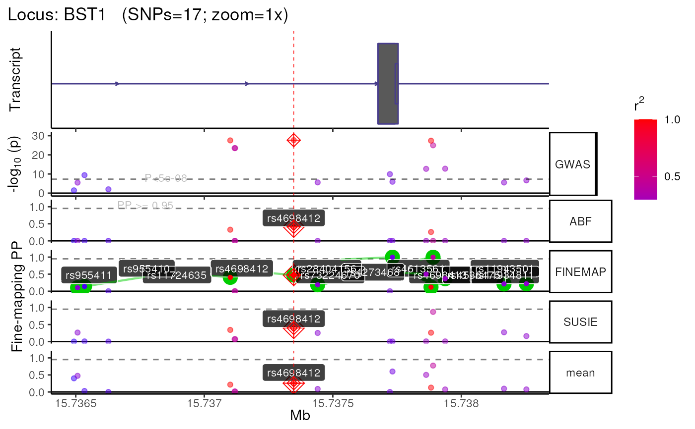

Unlike finemap_loci, you don't need to provide a topSNPs
data.frame. Instead, just manually provide the coordinates of the locus
you want to fine-map.
finemap_locus(
locus,
fullSS_path,
fullSS_genome_build = NULL,
results_dir = file.path(tempdir(), "results"),
dataset_name = "dataset_name",
dataset_type = "GWAS",
case_control = TRUE,
topSNPs = "auto",
force_new_subset = FALSE,
force_new_LD = FALSE,
force_new_finemap = FALSE,
finemap_methods = c("ABF", "FINEMAP", "SUSIE"),
finemap_args = NULL,
n_causal = 5,
credset_thresh = 0.95,
consensus_thresh = 2,
fillNA = 0,
conditioned_snps = NULL,
priors_col = NULL,
munged = FALSE,
colmap = echodata::construct_colmap(munged = munged),
compute_n = "ldsc",
LD_reference = "1KGphase3",
LD_genome_build = "hg19",
leadSNP_LD_block = FALSE,
superpopulation = "EUR",
download_method = "axel",
bp_distance = 5e+05,
min_POS = NA,
max_POS = NA,
min_MAF = NA,
trim_gene_limits = FALSE,
max_snps = NULL,
min_r2 = 0,
remove_variants = FALSE,
remove_correlates = FALSE,
query_by = "tabix",
qtl_suffixes = NULL,
plot_types = c("simple"),
zoom = "1x",
show_plot = TRUE,
tx_biotypes = NULL,
nott_epigenome = FALSE,
nott_show_placseq = FALSE,
nott_binwidth = 200,
nott_bigwig_dir = NULL,
xgr_libnames = NULL,
roadmap = FALSE,
roadmap_query = NULL,
remove_tmps = TRUE,
seed = 2022,
conda_env = "echoR_mini",
nThread = 1,
verbose = TRUE,
top_SNPs = deprecated(),
PP_threshold = deprecated(),
consensus_threshold = deprecated(),
plot.Nott_epigenome = deprecated(),
plot.Nott_show_placseq = deprecated(),
plot.Nott_binwidth = deprecated(),
plot.Nott_bigwig_dir = deprecated(),
plot.Roadmap = deprecated(),
plot.Roadmap_query = deprecated(),
plot.XGR_libnames = deprecated(),
server = deprecated(),
plot.types = deprecated(),
plot.zoom = deprecated(),
QTL_prefixes = deprecated(),
vcf_folder = deprecated(),
probe_path = deprecated(),
file_sep = deprecated,
chrom_col = deprecated(),
chrom_type = deprecated(),
position_col = deprecated(),
snp_col = deprecated(),
pval_col = deprecated(),
effect_col = deprecated(),
stderr_col = deprecated(),
tstat_col = deprecated(),
locus_col = deprecated(),
freq_col = deprecated(),
MAF_col = deprecated(),
A1_col = deprecated(),
A2_col = deprecated(),
gene_col = deprecated(),
N_cases_col = deprecated(),
N_controls_col = deprecated(),
N_cases = deprecated(),
N_controls = deprecated(),
proportion_cases = deprecated(),
sample_size = deprecated(),
PAINTOR_QTL_datasets = deprecated()
)Locus name to fine-map (e.g. "BIN1").
Can be named to indicate a specific gene within a QTL locus
(e.g. c(ENSG00000136731="BIN1")).
Path to the full summary statistics file (GWAS or QTL) that you want to fine-map. It is usually best to provide the absolute path rather than the relative path.
Genome build of the full summary statistics
(fullSS_path). Can be "GRCH37" or "GRCH38" or one of their synonyms..
If fullSS_genome_build==NULL and munged=TRUE,
infers genome build (hg19 vs. hg38)
from summary statistics using get_genome_builds.
Where to store all results. IMPORTANT!: It is usually best to provide the absolute path rather than the relative path. This is especially important for FINEMAP.
The name you want to assign to the dataset being fine-mapped, This will be used to name the subdirectory where your results will be stored (e.g. Data/GWAS/<dataset_name>). Don't use special characters (e.g.".", "/").
The kind dataset you're fine-mapping (e.g. GWAS, eQTL, tQTL). This will also be used when creating the subdirectory where your results will be stored (e.g. Data/<dataset_type>/Kunkle_2019).
Whether the summary statistics come from a case-control
study (e.g. a GWAS of having Alzheimer's Disease or not) (TRUE)
or a quantitative study (e.g. a GWAS of height, or an eQTL) (FALSE).
A data.frame with the genomic coordinates of the lead SNP
for each locus.
The lead SNP will be used as the center of the window when extracting
subset from the full GWAS/QTL summary statistics file.
Only one SNP per Locus should be included.
At minimum, topSNPs should include the following columns:
A unique name for each locus. Often, loci are named after a relevant gene (e.g. LRRK2) or based on the name/coordinates of the lead SNP (e.g. locus_chr12_40734202)
The chromosome that the SNP is on. Can be "chr12" or "12" format.
The genomic position of the SNP (in basepairs)
By default, if a subset of the full
summary stats file for a given locus is already present,
then echolocatoR will just use the pre-existing file.
Set force_new_subset=T to override this and extract a new subset.
Subsets are saved in the following path structure:
Data/\<dataset_type\>/\<dataset_name\>/\<locus\>/Multi-finemap/
\<locus\>_\<dataset_name\>_Multi-finemap.tsv.gz
Force new LD subset.
By default, if an fine-mapping results file for
a given locus is already present,
then echolocatoR will just use the preexisting file.
Set force_new_finemap=T to override this and re-run fine-mapping.
Which fine-mapping methods you want to use.
A named nested list containing additional arguments
for each fine-mapping method. e.g.
finemap_args = list(FINEMAP=list(), PAINTOR=list(method=""))
The maximum number of potential causal SNPs per locus. This parameter is used somewhat differently by different fine-mapping tools. See tool-specific functions for details.
The minimum fine-mapped posterior probability
for a SNP to be considered part of a Credible Set.
For example, credset_thresh=.95 means that all Credible Set SNPs
will be 95% Credible Set SNPs.
The minimum number of fine-mapping tools in which a SNP is in the Credible Set in order to be included in the "Consensus_SNP" column.
Value to fill LD matrix NAs with.
Which SNPs to conditions on when fine-mapping with (e.g. COJO).
[Optional] Name of the a column in
dat to extract SNP-wise prior probabilities from.
Whether fullSS_path have already been
standardised/filtered full summary stats
with format_sumstats.
If munged=FALSE you'll need to provide the necessary
column names to the colmap argument.
Column name mappings in in fullSS_path. Must be a named
list. Can use construct_colmap to assist with this. This
function can be used in two different ways:
munged=FALSE : When munged=FALSE,
you will need to provide the necessary column names to the
colmap argument (default).
munged=TRUE : Alternatively, instead of filling out
each argument in
construct_colmap, you can simply set munged=TRUE
if fullSS_path has already been munged with
format_sumstats.
How to compute per-SNP sample size (new column "N").
If the column "N" is already present in dat, this column
will be used to extract per-SNP sample sizes
and the argument compute_n will be ignored.
If the column "N" is not present in dat, one of the following
options can be supplied to compute_n:
0: N will not be computed.
>0: If any number >0 is provided,
that value will be set as N for every row.
**Note**: Computing N this way is incorrect and should be avoided
if at all possible.
"sum": N will be computed as:
cases (N_CAS) + controls (N_CON), so long as both columns are present.
"ldsc": N will be computed as effective sample size:
Neff =(N_CAS+N_CON)*(N_CAS/(N_CAS+N_CON)) / mean((N_CAS/(N_CAS+N_CON))(N_CAS+N_CON)==max(N_CAS+N_CON)).
"giant": N will be computed as effective sample size:
Neff = 2 / (1/N_CAS + 1/N_CON).
"metal": N will be computed as effective sample size:
Neff = 4 / (1/N_CAS + 1/N_CON).
LD reference to use:
"1KGphase1" : 1000 Genomes Project Phase 1 (genome build: hg19).
"1KGphase3" : 1000 Genomes Project Phase 3 (genome build: hg19).
"UKB" : Pre-computed LD from a British European-decent subset of UK Biobank. Genome build : hg19
"<vcf_path>" : User-supplied path to a custom VCF file
to compute LD matrix from.
Accepted formats: .vcf / .vcf.gz / .vcf.bgz
Genome build : defined by user with target_genome.
"<matrix_path>" : User-supplied path to a pre-computed LD matrix
Accepted formats: .rds / .rda / .csv /
.tsv / .txt
Genome build : defined by user with target_genome.
Genome build of the LD panel. This is automatically assigned to the correct genome build for each LD panel except when the user supplies custom vcf/LD files.
Only return SNPs within the same LD block as the lead SNP (the SNP with the smallest p-value).
Superpopulation to subset LD panel by
(used only if LD_reference is "1KGphase1" or "1KGphase3").
See popDat_1KGphase1 and popDat_1KGphase3
for full tables of their respective samples.
"axel" : Multi-threaded
"wget" : Single-threaded
"download.file" : Single-threaded
"internal" : Single-threaded
(passed to download.file)
"wininet" : Single-threaded
(passed to download.file)
"libcurl" : Single-threaded
(passed to download.file)
"curl" : Single-threaded
(passed to download.file)
Distance around the lead SNP to include.
Minimum genomic position to include.
Maximum genomic position to include.
Minimum Minor Allele Frequency (MAF) of SNPs to include.
If a gene name is supplied to this argument
(e.g. trim_gene_limits="BST"), only SNPs within the gene body
will be included.
Maximum number of SNPs to include.
Correlation threshold for remove_correlates.
A list of SNP RSIDs to remove.
A list of SNPs.
If provided, all SNPs that correlates with these SNPs (at r2>=min_r2)
will be removed from both dat and LD list items..
Choose which method you want to use to extract locus subsets from the full summary stats file. Methods include:
Convert the full summary stats file in an indexed tabix file. Makes querying lightning fast after the initial conversion is done. (default)
Extract locus subsets using min/max genomic coordinates with awk.
If columns with QTL data is included in dat,
you can indicate which columns those are with one or more string suffixes
(e.g. qtl_suffixes=c(".eQTL1",".eQTL2") to use the columns
"P.QTL1", "Effect.QTL1", "P.QTL2", "Effect.QTL2").
Which kinds of plots to include. Options:
"simple"Just plot the following tracks: GWAS, fine-mapping, gene models
"fancy"Additionally plot XGR annotation tracks (XGR, Roadmap, Nott2019). '
"LD"LD heatmap showing the 10 SNPs surrounding the lead SNP.
Zoom into the center of the locus when plotting (without editing the fine-mapping results file). You can provide either:
The size of your plot window in terms of basepairs
(e.g. zoom=50000 for a 50kb window).
How much you want to zoom in (e.g. zoom="1x"
for the full locus, zoom="2x"
for 2x zoom into the center of the locus, etc.).
You can pass a list of window sizes (e.g. c(50000,100000,500000))
to automatically generate
multiple views of each locus.
This can even be a mix of different style inputs: e.g.
c("1x","4.5x",25000).
Print plot to screen.
Transcript biotypes to include in the gene model track.
By default (NULL), all transcript biotypes will be included.
See get_tx_biotypes for a full list of
all available biotypes
Include tracks showing brain cell-type-specific epigenomic data from Nott et al. (2019).
Include track generated by NOTT2019_plac_seq_plot.
When including Nott et al. (2019) epigenomic data in the track plots, adjust the bin width of the histograms.
Instead of pulling Nott et al. (2019) epigenomic data from the UCSC Genome Browser, use a set of local bigwig files.
Passed to XGR_plot.
Which XGR annotations to check overlap with.
For full list of libraries see
here.
Passed to the RData.customised argument in xRDataLoader.
Find and plot annotations from Roadmap.
Only plot annotations from Roadmap whose
metadata contains a string or any items from a list of strings
(e.g. "brain" or c("brain","liver","monocytes")).
Whether to remove any temporary files (e.g. FINEMAP output files) after the pipeline is done running.
Set the seed for all functions where this is possible.
Conda environment to use.
Number of threads to parallelise saving across.
Print messages.
[deprecated]
[deprecated]
[deprecated]
[deprecated]
[deprecated]
[deprecated]
[deprecated]
[deprecated]
[deprecated]
[deprecated]
[deprecated]
[deprecated]
[deprecated]
[deprecated]
[deprecated]
[deprecated]
[deprecated]
[deprecated]
[deprecated]
[deprecated]
[deprecated]
[deprecated]
[deprecated]
[deprecated]
[deprecated]
[deprecated]
[deprecated]
[deprecated]
[deprecated]
[deprecated]
[deprecated]
[deprecated]
[deprecated]
[deprecated]
[deprecated]
[deprecated]
[deprecated]
[deprecated]
The primary functions of echolocatoR that expedite fine-mapping by wrapping many other echolocatoR functions into one. Encompasses steps including:
Extract subsets of the full summary stats GWAS or QTL file and reformat them to be compatible with echolocatoR's various functions
Download and prepare the necessary LD matrix.
Run various fine-mapping tools and merge the results into a single multi-finemap data.frame.
Summarise the results in a multi-track plot for each locus.
Other MAIN:
finemap_loci()
topSNPs <- echodata::topSNPs_Nalls2019
fullSS_path <- echodata::example_fullSS(dataset = "Nalls2019")
#> Writing file to ==> /tmp/Rtmp3dRYr3/nalls2019.fullSS_subset.tsv
res <- echolocatoR::finemap_locus(
fullSS_path = fullSS_path,
topSNPs = topSNPs,
locus = "BST1",
finemap_methods = c("ABF","FINEMAP","SUSIE"),
dataset_name = "Nalls23andMe_2019",
fullSS_genome_build = "hg19",
bp_distance = 1000,
munged = TRUE)
#>
#> ────────────────────────────────────────────────────────────────────────────────
#>
#> ── Step 1 ▶▶▶ Query 🔎 ─────────────────────────────────────────────────────────
#>
#> ────────────────────────────────────────────────────────────────────────────────
#> + Importing pre-existing file: /tmp/Rtmp3dRYr3/results/GWAS/Nalls23andMe_2019/BST1/Multi-finemap/1KGphase3_LD.Multi-finemap.tsv.gz
#> Subset file looks good.
#>
#> ────────────────────────────────────────────────────────────────────────────────
#>
#> ── Step 2 ▶▶▶ Extract Linkage Disequilibrium 🔗 ────────────────────────────────
#>
#> ────────────────────────────────────────────────────────────────────────────────
#> LD_reference identified as: 1kg.
#> Previously computed LD_matrix detected. Importing: /tmp/Rtmp3dRYr3/results/GWAS/Nalls23andMe_2019/BST1/LD/BST1.1KGphase3_LD.RDS
#> LD_reference identified as: r.
#> Converting obj to sparseMatrix.
#> + FILTER:: Filtering by LD features.
#>
#> ────────────────────────────────────────────────────────────────────────────────
#>
#> ── Step 3 ▶▶▶ Filter SNPs 🚰 ───────────────────────────────────────────────────
#>
#> ────────────────────────────────────────────────────────────────────────────────
#> FILTER:: Filtering by SNP features.
#> + FILTER:: Post-filtered data: 17 x 29
#> + Subsetting LD matrix and dat to common SNPs...
#> Removing unnamed rows/cols
#> Replacing NAs with 0
#> + LD_matrix = 17 SNPs.
#> + dat = 17 SNPs.
#> + 17 SNPs in common.
#> Converting obj to sparseMatrix.
#>
#> ────────────────────────────────────────────────────────────────────────────────
#>
#> ── Step 4 ▶▶▶ Fine-map 🔊 ──────────────────────────────────────────────────────
#>
#> ────────────────────────────────────────────────────────────────────────────────
#> Gathering method sources.
#> Gathering method citations.
#> ++ Previously multi-finemapped results identified. Importing: /tmp/Rtmp3dRYr3/results/GWAS/Nalls23andMe_2019/BST1/Multi-finemap/1KGphase3_LD.Multi-finemap.tsv.gz
#> + Fine-mapping with 'ABF, FINEMAP, SUSIE' completed:
#>
#> ────────────────────────────────────────────────────────────────────────────────
#>
#> ── Step 5 ▶▶▶ Plot 📈 ──────────────────────────────────────────────────────────
#>
#> ────────────────────────────────────────────────────────────────────────────────
#> +-------- Locus Plot: BST1 --------+
#> + support_thresh = 2
#> + Calculating mean Posterior Probability (mean.PP)...
#> + 3 fine-mapping methods used.
#> + 12 Credible Set SNPs identified.
#> + 0 Consensus SNPs identified.
#> + Filling NAs in CS cols with 0.
#> + Filling NAs in PP cols with 0.
#> LD_matrix detected. Coloring SNPs by LD with lead SNP.
#> ++ echoplot:: GWAS full window track
#> ++ echoplot:: GWAS track
#> ++ echoplot:: Merged fine-mapping track
#> Melting PP and CS from 4 fine-mapping methods.
#> ++ echoplot:: Adding Gene model track.
#> Converting dat to GRanges object.
#> max_transcripts= 1 .
#> 1 transcripts from 1 genes returned.
#> Loading required namespace: pals
#> Fetching data...
#> OK
#> Parsing exons...
#> OK
#> Defining introns...
#> OK
#> Defining UTRs...
#> OK
#> Defining CDS...
#> OK
#> aggregating...
#> Done
#> Constructing graphics...
#> Loading required namespace: pals
#> + Adding vertical lines to highlight SNP groups...
#> +>+>+>+>+ zoom = 1x +<+<+<+<+
#> + echoplot:: Get window suffix...
#> + echoplot:: Removing GWAS full window track @ zoom=1x
#> + Removing subplot margins...
#> + Reordering tracks...
#> [1] "+ Ensuring last track shows genomic units..."
#> + Aligning xlimits for each subplot...
#> + Checking track heights...
#> + echoplot:: Saving plot ==> /tmp/Rtmp3dRYr3/results/GWAS/Nalls23andMe_2019/BST1/multiview.BST1.1KGphase3.1x.png
#> Recording all `finemap_locus` arguments.
